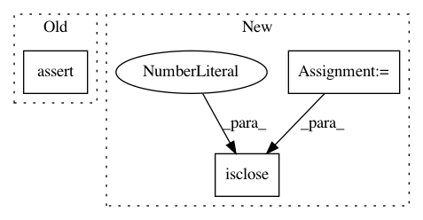

2d7d39e8178a454aa21f6de901c760a3a8151596,pliers/tests/extractors/test_image_extractors.py,,test_tensorflow_keras_inception_v3_extractor,#,57
Before Change
assert df.shape == (2, 19)
assert df["TensorFlowKerasInceptionV3Extractor"].loc[
0, "Granny_Smith"] == 0.9737075
assert df["TensorFlowKerasInceptionV3Extractor"].loc[
1, "Windsor_tie"] == 0.64234024
assert 4.2 in df[("onset", np.nan)].values
assert 1 in df[("duration", np.nan)].values
After Change
true = 0.9737075
pred = df["TensorFlowKerasInceptionV3Extractor"].loc[0, "Granny_Smith"]
np.isclose(true, pred, 1e-05)
true = 0.64234024
pred = df["TensorFlowKerasInceptionV3Extractor"].loc[1, "Windsor_tie"]
np.isclose(true, pred, 1e-05)
assert 4.2 in df[("onset", np.nan)].values
assert 1 in df[("duration", np.nan)].values
In pattern: SUPERPATTERN
Frequency: 4
Non-data size: 3
Instances
Project Name: tyarkoni/pliers
Commit Name: 2d7d39e8178a454aa21f6de901c760a3a8151596
Time: 2019-05-01
Author: jakubk@mit.edu
File Name: pliers/tests/extractors/test_image_extractors.py
Class Name:
Method Name: test_tensorflow_keras_inception_v3_extractor
Project Name: geomstats/geomstats
Commit Name: e4eaec6cbd34c7abc59fcf29a95dab3c9f2810b8
Time: 2018-09-12
Author: ninamio78@gmail.com
File Name: geomstats/riemannian_metric.py
Class Name: RiemannianMetric
Method Name: mean
Project Name: neurodsp-tools/neurodsp
Commit Name: b197fb0946afe59b45a8c7a20a567ebfe253108f
Time: 2019-04-08
Author: tdonoghue@ucsd.edu
File Name: neurodsp/tests/test_utils.py
Class Name:
Method Name: test_normalize_variance
Project Name: geomstats/geomstats
Commit Name: 57b3d54234cda1decf80764f856ab255b8d13c1d
Time: 2018-09-14
Author: ninamio78@gmail.com
File Name: geomstats/riemannian_metric.py
Class Name: RiemannianMetric
Method Name: mean